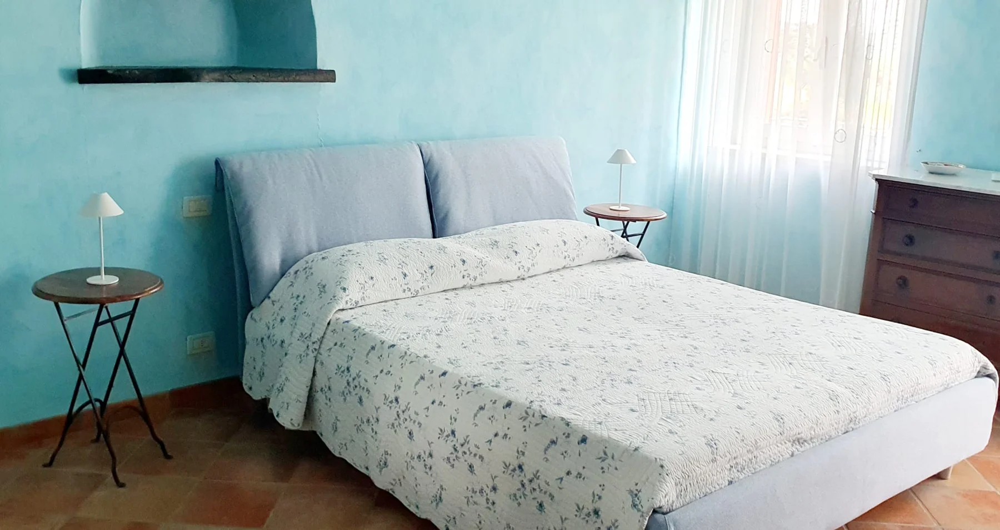
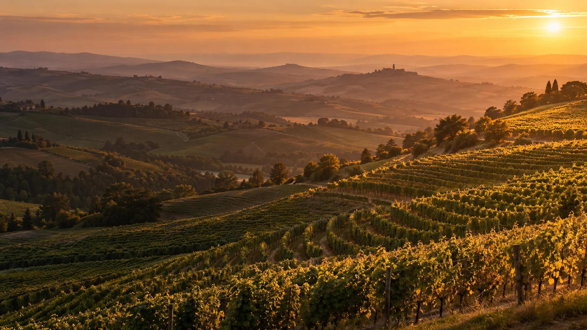
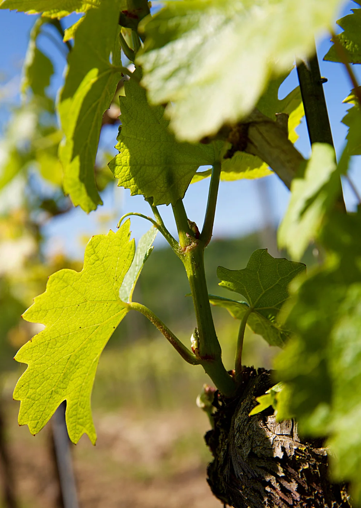
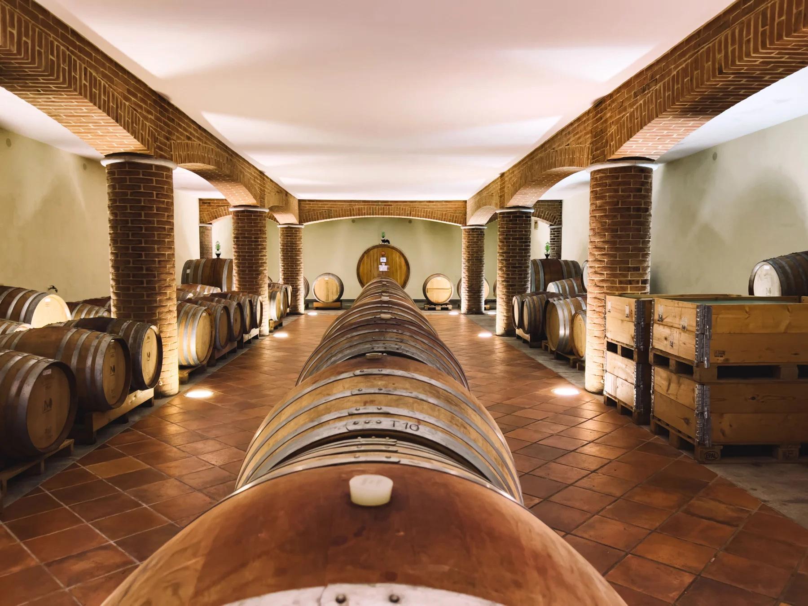
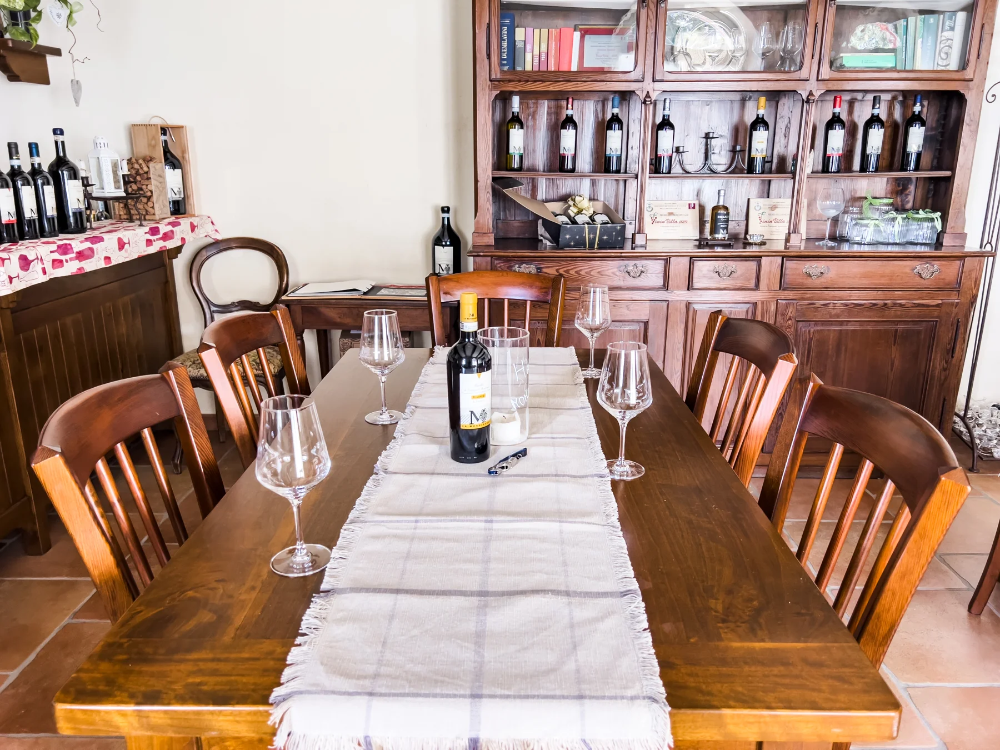
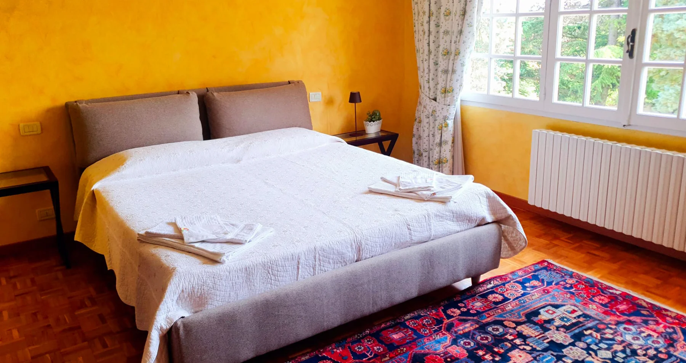
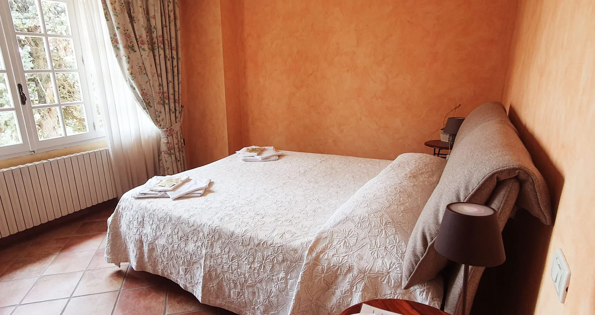

Ruchè
Letto matrimoniale e bagno privato.
Dimensione del testo

Montemagno Monferrato, Piemonte
Vini che raccontano una terra.
Un luogo che invita a restare.

La nostra terra, il nostro modo di essere
Tra Montemagno e Castagnole Monferrato, un podere dell’Ottocento custodisce una passione che si rinnova, vendemmia dopo vendemmia.
La cura dei vigneti, la raccolta a mano, il tempo dell’affinamento. È da questi gesti che nascono i nostri vini: espressioni diverse di una stessa terra, da conoscere un calice alla volta.
Entra nella nostra cantinaLa collezione La Mondianese
Bianchi luminosi, un rosato delicato e rossi dal carattere piemontese. Trova la bottiglia che incontra il tuo gusto.
Ruchè di Castagnole Monferrato DOCG
Il Ruchè, nella sua espressione più diretta: aromatico e morbido.
11 vini
Nessun vino trovato. Prova un altro nome o azzera la ricerca.
Caratteristiche dalle schede della cantina. Gradazioni e assemblaggi possono variare con l’annata.

Il tempo, un ingrediente prezioso
Sotto le colline, tra botti, barrique e tonneau, il vino trova il tempo per esprimersi. Sopra, una cantina moderna accompagna ogni fase della vinificazione.
Vivi la cantinaIl piacere di incontrarsi
Cammina tra i filari, scopri la cantina e siediti con noi. Il vino è ancora più bello quando diventa un incontro.

L’ospitalità della cascina
Tre camere, tre nomi di vino. Nella dimora ottocentesca, il paesaggio entra dalle finestre e invita a rallentare.
L’agriturismo è in ristrutturazione. Le prenotazioni delle camere sono temporaneamente sospese.
Chiedi informazioni sulla riapertura
Letto matrimoniale e bagno privato.

Letto matrimoniale e bagno privato.

Mini suite, due camere e bagno privato.
Ti aspettiamo in Monferrato
Per una degustazione, un vino da conoscere o una domanda sulla cascina, scegli come contattarci.